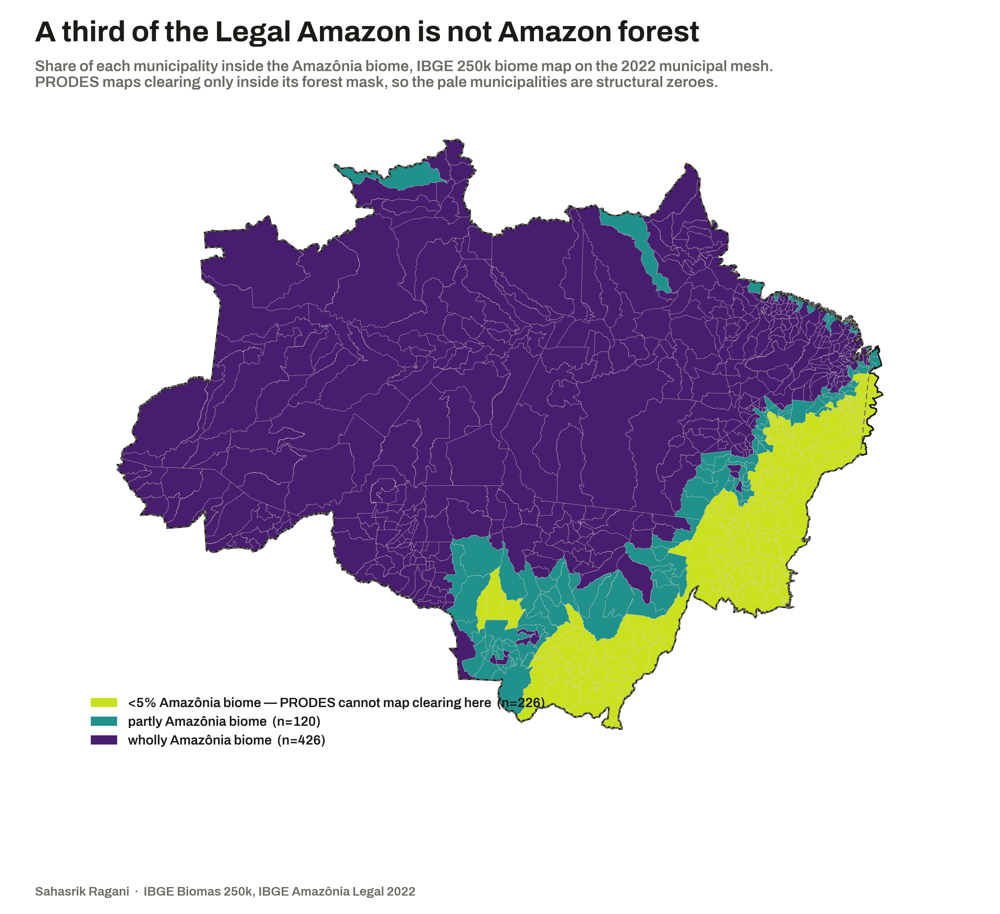
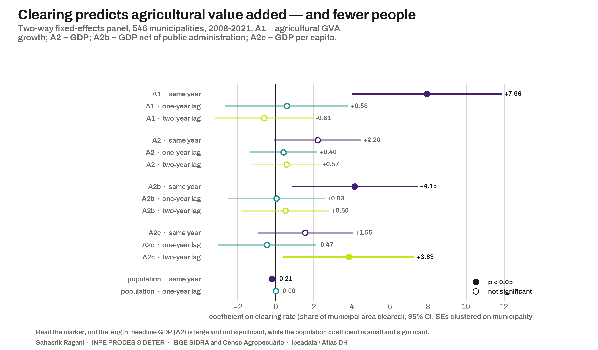

Where this started
I read Harvey and went looking for the frontier
David Harvey has a way of reading a skyscraper that I have never been able to shake. A tower, on his account, is not really a building; it is what happens when there is so much capital piled up in one place that it has nowhere left to go but upwards, and the height of it is a monument to a surplus that could not find anything more useful to do with itself. Cities do the same thing sideways when they sprawl. His larger argument, the one that made me want to go and look at something, is that growth under capitalism is not a choice a society makes but a condition it is trapped in: accumulation has to keep finding somewhere new to happen, and when it runs out of room it manufactures more room, which he calls the spatial fix.
So I went looking for the biggest version of that I could think of, which is a forest being converted into farmland at the scale of a continent. If Harvey is right that expansion is compulsory rather than chosen, then the Amazon frontier ought to be the clearest case anywhere on earth: capital with nowhere profitable left to go, mowing down the habitat of everything else in order to keep the machine turning over. That was the intuition. What I wanted to know was whether it survives contact with data, and specifically with data published by the same state that spends most of its political energy insisting the trade-off is worth it.
The defence of Amazon clearing is almost never that the forest does not matter. It is that the forest is what the region has to sell, and that selling it buys roads, clinics, schools and a way out of poverty for people who did not choose to be born on a frontier. Cutting is framed as the cost side of a transaction with a real benefit on the other side, and anybody objecting gets positioned as somebody comfortable enough to prefer trees to people. That framing does an enormous amount of work in Brazilian politics and it is almost never checked in the currency it claims for itself.
The question
Does clearing forest actually produce the growth it is traded for?
Stated carefully, because the careful version is the testable one: within a given municipality, in the years it cleared more forest than it usually does, did it grow faster than the rest of the region grew in that same year — and did any of that growth turn into development for the people living there?
Both halves of that sentence matter, and the fiddly clauses are what make it answerable. Comparing deforested places to non-deforested places would only rediscover that farming happens where farms are. Comparing a municipality to itself over time, against every other municipality in the same year, strips out both the permanent character of a place and whatever the soy price or the exchange rate was doing that year. What is left is a narrow question, and a much harder one to pass.
There is a second question underneath it, which I did not go looking for and which ended up taking over half the project. Before you can ask what deforestation does, you have to accept somebody's number for how much deforestation there was. That number turns out to be a definition with a boundary drawn around it, and the boundary is doing more work than the number is.
The ground
What the Legal Amazon is, and why a third of it is not Amazon
The Amazônia Legal, or Legal Amazon, is an administrative category, not an ecological one. It was drawn in 1953 as a planning region so that the federal government could direct development spending at a part of the country it considered empty, and it has been redrawn since. Today it takes in nine states whole or in part: Acre, Amapá, Amazonas, Mato Grosso, Pará, Rondônia, Roraima, Tocantins, and the portion of Maranhão lying west of the forty-fourth meridian. That is a little over five million square kilometres and 772 municipalities, roughly fifty-nine per cent of Brazil's land holding about fourteen per cent of its people.
The meridian is not a metaphor. The boundary really does run down a line of longitude and really does cut through the middle of municipalities in Maranhão, and the Brazilian statistics agency ships those municipalities whole. I spent an afternoon convinced one of my maps was broken because a hard black outline was slicing through municipal boundaries instead of going around them. The map was fine; the line is just like that.
Which produces the single most important fact for reading anything below: a third of the Legal Amazon is not Amazon forest. Of the 772 municipalities, 426 sit wholly inside the Amazônia biome, 120 straddle its edge, and 226 have effectively none of it, being Cerrado savannah and Pantanal wetland that happen to fall inside a planning boundary. Those 226 cannot record deforestation in the official statistics, because the official instrument only looks inside the forest. They are not places where deforestation failed to happen. They are places where it cannot be seen, and averaging them in as zeroes would drag every result in this project toward nothing.

The hypotheses
Twenty-six predictions, written down before anything was estimated
Thirteen variables generate seventy-eight possible pairwise tests, and at the conventional five per cent threshold roughly four of those would come back significant even if nothing in the world were related to anything. The only defence against that is to say in advance what you expect and then report what happened, so I wrote an edge list first: twenty-six directed relationships, each with an expected sign, an expected lag, a mechanism, and the observation that would falsify it. Three of them were registered as predicted nulls, because a well-powered null on a relationship everybody assumes is real is worth more than another confirmation.
The ones this page reports on are these. Clearing should raise agricultural output, and might raise the wider economy. Clearing-driven growth should not raise human development, if the existing literature is right. Clearing-driven growth should raise land concentration and recorded rural conflict, which is the part nobody had tested, and which is where I expected the Harvey reading to earn its keep. And the official deforestation rate should undercount what is actually happening to the forest, for reasons both definitional and observational.
The results
What the panel says, in plain language
Every number below comes from a two-way fixed-effects regression over 546 municipalities, with standard errors clustered on the municipality. The plain-English sentence is the finding; the numbers under it are there so somebody can check.
Clearing forest raises recorded agricultural output by a small amount, in the same year, and not in any year afterwards.
coefficient +7.96p 0.0001explains 0.33% of the variationn 6,548
That first line needs its second sentence or it will be misread in both directions. The relationship is real: clearing an additional one per cent of a municipality goes with roughly eight per cent higher agricultural growth in that year, and the estimate is precise enough that chance is not a plausible explanation. But it accounts for one third of one per cent of why a municipality's agriculture grew faster or slower. Over ninety-nine per cent of that story is something else: rainfall, prices, credit, what the neighbours planted. So the honest version of the headline is that the share of a municipality cleared does not predict any proportionate increase in its agricultural growth; it predicts a detectable, tiny one, which is a different claim from the one the trade-off argument needs.
Clearing forest does not raise a municipality's total economy.
coefficient +2.20p 0.060not significantn 7,640
Net of federal transfers — stripping out the part of a municipal economy that is money allocated to the place rather than value produced in it — the effect does clear significance, at +4.15 with a p-value of 0.014. It is still small, and it still explains under two tenths of one per cent of the variation. Clearing shows up in the farm accounts and then mostly stops.
Clearing forest does not improve human development.
coefficient +0.005p 0.79n 543 municipalitieswindow 2000–2010
This one was the hardest to earn and I want to be clear about why. My first attempt used a clearing measure covering 2008 to 2010 against a human development change measured from 2000 to 2010, which is not a test of anything; it is a driver that does not span its own outcome. Downloading the Maryland global forest loss product gave me clearing back to 2001, the standard errors fell by a factor of five, and the null became a real null rather than an uninformative one. Every municipality in the Legal Amazon gained human development over that decade, because Brazil as a whole did. The ones that cut the most did not gain any more than the ones that cut the least.
A hectare of cleared Amazon is worth about 1,634 reais in recorded agricultural value added, once.
median municipalityR$163,000 per km²2023 priceslag terms null
Take the coefficient into a median municipality of the sample — 2,886 square kilometres of in-boundary area, 59.2 million reais of annual agricultural value added — and clearing one square kilometre associates with about 163,000 reais extra in that year. That is roughly 1,634 reais per hectare, which at the time of writing is somewhere around three hundred US dollars. It is a gross figure, before the cost of clearing the land and before the cost of running it, and it is a single year: the one-year and two-year lags are statistically indistinguishable from zero, so nothing in this panel says the gain persists. Set that against what a hectare of standing forest holds in carbon, rainfall recycling, species and people, and the transaction stops looking like a trade.

The second finding
Most of what happens to the forest is not counted as deforestation
Brazil's official deforestation rate counts clear-cut of primary forest, at least 6.25 hectares at a time, inside a fixed forest mask, on a year running from the first of August. Every clause in that sentence is a decision. Forest that is degraded but not cleared does not count. Forest that burns does not count. A mining pit does not count. A family clearing two hectares does not count while a rancher clearing two hundred does, which means the threshold is also, quietly, a filter that makes the instrument better at seeing large actors than small ones.
Three-quarters of the forest disturbance Brazil's own space agency observes falls outside the definition it reports as the deforestation rate.
clear-cut 57,005 km²everything else 172,537 km²75.2%2017–2025
That is not an activist estimate and it cannot be waved away as one, because both numbers come from the same institution. The alert system and the official rate are run by the same agency; one of them classes degradation, burn scar, mining and disordered cutting separately, and the other excludes all four by definition. An independent check makes it worse rather than better: the Maryland forest loss product records 2.9 times the official figure across 2008 to 2025, and the ratio peaks at 6.0 in 2024, 5.9 in 2016 and 5.0 in 2017 — the drought and fire years. The two instruments diverge most precisely when the forest is under the most stress, which means the blind spot in the official rate is widening as the climate changes, and everything keyed to that rate inherits it.
Where Harvey comes back
If the crop is worth so little, what is actually being bought?
Here is the number that would not sit still for me. If a cleared hectare returns something like the price of a pair of shoes in recorded output, and returns it once, then either an enormous number of people are behaving irrationally at continental scale, or the return they are chasing is not the one the agricultural statistics were built to measure.
Working through the data made me correct my own analogy rather than abandon it, and the correction is the most interesting thing I have. A skyscraper is capital fixed into the built environment: produced, paid for, depreciating, eventually written down. Forest clearing is the opposite motion. It is capital liquidating a stock it did not produce and did not pay for. The frontier is not mainly a sink that absorbs surplus; it is a source of assets that are cheap because nobody was ever billed for them. Harvey explains why capital moves outward. Jason Moore's idea of cheap nature explains why it pays once it arrives.
Where clearing happened, farmland moved into larger holdings — over and above anything the extra output explains.
share in holdings ≥1,000 hacoefficient +0.875p 0.007n 545
That result is conditional on agricultural growth, which is what makes it say something. If clearing were simply land coming into production, concentration ought to track output; instead it exceeds it. And clearing in Brazil is a legal act as much as an agricultural one, because demonstrating productive occupation is how an occupant qualifies for title under the land regularisation statutes. Cutting is the cheapest available technology for converting public forest into a private asset. The asset, not the crop.
Clearing also predicts recorded land conflict, and killings in those conflicts.
land conflicts +19.4, p 0.005killings +4.27, p 0.010n 7,098 / 7,644
Two honest limits travel with that. The conflict archive is compiled by the Catholic Church's land commission rather than the state, so it counts what was reported, and municipality fixed effects absorb the permanent reporting density of a place but not changes in reporting effort over time. And a conflict count turns out to be partly a measure of duration rather than intensity, for reasons set out on the maps page — in Roraima the median municipality holds fifty-eight per cent of its entire conflict record in a single unresolved case, against five to sixteen per cent in every other state in the region.
What failed
Three predictions that did not survive, reported as failures
A framework that cannot be caught being wrong is not worth much, so these belong on the front page rather than in an appendix.
I predicted that cloudier municipalities would record less deforestation, because the official product is optical and cannot see through cloud. The correlation came back with the wrong sign. I predicted that income inequality would rise where clearing-driven growth was strongest; it significantly fell, at −0.176 with a p-value of 0.0003, which is a refuted pre-registered direction rather than an absence of evidence. And I built a radar detector to estimate what the optical product misses, got a result, and then found on re-running it that the same satellite scenes produced a materially different answer twenty-two hours later, because the code silently dropped scenes that failed to load. Both versions of that number are withdrawn. It is now fixed and recorded, and nothing from it will be quoted until two runs agree.
The limit I will not argue past
None of this is causal. I can show that in the years a municipality cleared more, it also recorded more agricultural value, more land conflict and more concentrated farmland than the year effect predicts. I cannot show that clearing caused any of it, because anything that varies within a municipality over time and moves both sides — a new road, a change of mayor, a land grab getting organised — escapes this design.
I also have no data on who benefits. "Concentrated" is measured; "a handful of people" is an inference no series here counts. The falling income inequality is consistent with the beneficiaries being absentee — the index measures inequality among people who live in the municipality — but that is a hypothesis, and testing it means ownership registers and credit records that are not in this build.
Closing
The instrument is part of the argument
The thread running through all of this is that the measurements are not innocent. A minimum mapping unit of 6.25 hectares decides whose clearing is visible. A definition restricted to clear-cut decides that three-quarters of observed damage is not deforestation. A meridian drawn for administrative convenience in 1953 decides which municipalities are in the Amazon at all, and I found the largest error in my own work because that line was sitting in the wrong place on one of my maps, making twenty municipalities in Maranhão look twenty-one times less deforested than they were. A measurement regime is not a neutral observer of a frontier; it is part of how the frontier is governed, and what it declines to count is not an oversight but an allocation.
Which brings me back to the defence I started with, that the forest is the price of development. On the Brazilian state's own numbers, using the Brazilian state's own instruments, the forest is being exchanged for something worth about sixteen hundred reais a hectare for a single year, which does not accumulate into general prosperity, does not appear in human development, and leaves the land more concentrated than it found it. The people making that trade are not the people paying for it, and the accounting system that would let us see who they are has not been built yet. That is not an argument for a better exchange rate. It is a reason to stop describing it as an exchange.